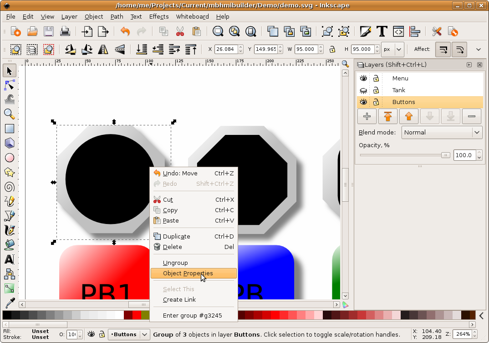
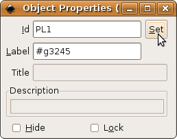

MBLogic
for an open world in automation
MBLogic
for an open world in automation
The SVG ID Property
In order to use scripting to control an SVG display object (e.g. turn a pilot light on and off), it must have a name. This name is known as the "id". An "id" is simply a unique string. It is not permitted to have two "ids" with the same name. If you do cause two "ids" to be the same, then the results are unpredictable. Typically what happens is that one of the objects ends up as an "orphan" with no way of controlling it.
Setting the "id" Property
To set an "id":
1) Select the object and then right click on it. When the menu appears, select "object properties".

2) A dialogue box will appear. Enter the desired "id" into the "id" box. Leave the "label" and other settings as is. Record the "id" you used, as you will need to know it later.

There are special requirements when setting the "id" for rotating objects (e.g. selector switches, dial gauges, pump rotors, etc.). See the section below for details.
It is not necessary to set the "id" property for objects that you don't intend to control (e.g. background art). However, it can be convenient to do so as this will make navigating through the objects in the XML editor easier.
The HMIBuilder program will automatically change the "id" of each layer to match the layer name when you assemble the web page. Do not use an "id" name which matches a layer name, even though this will not cause an error while you are using Inkscape.
The "id" Property for Rotating Objects (Selector Switches, Dial Gauges, Pumps)
Older versions of the HMI display library had special requirements regarding how to apply an "id" to rotating objects such as selector switches, dial gauges, and pumps. Newer versions of the library do not have this special requirement. Instead, the library will search within the widget for the rotating elements when the page is starting up. Assign the "id" to the outer element just as is done with all the other widgets.